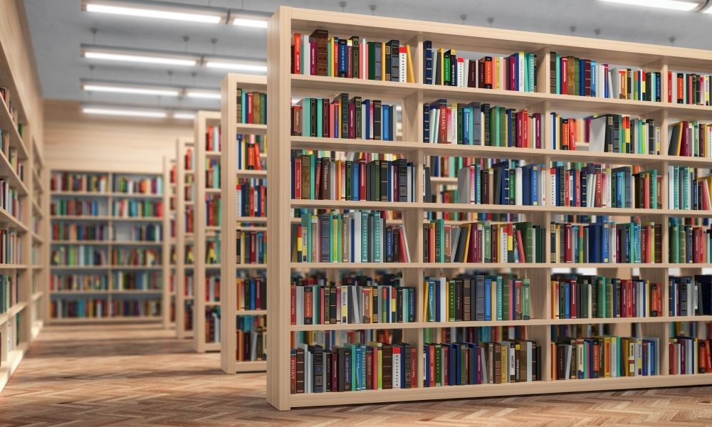

Librairie indépendante — Alger
Un livre bien choisi tient compagnie longtemps.
Chez Page & Pine, chaque rayon est composé à la main. Romans, essais et livres jeunesse, sélectionnés par des libraires qui les ont vraiment lus.

Depuis 2016
Une librairie, pas un entrepôt.
Page & Pine est née dans un garage de Chéraga avec deux étagères et beaucoup trop de cafés. Aujourd'hui encore, chaque titre passe entre les mains d'un libraire avant d'arriver en rayon.
Pas d'algorithme pour choisir ce qu'on vous propose. Juste des gens qui lisent, et qui se trompent parfois — mais rarement.
2016
Année d'ouverture
4200+
Titres en rayon
3
Libraires à temps plein
Questions fréquentes
Faites-vous des commandes spéciales ? +
Oui. Si un titre n'est pas en rayon, on le commande — comptez 5 à 10 jours selon l'éditeur.
Peut-on réserver un livre par téléphone ?
+Oui, on le met de côté 48h à votre nom. Passé ce délai, il retourne en rayon.
Organisez-vous des rencontres avec des auteurs ?+
Environ une fois par mois, en soirée. Les dates sont annoncées sur place et par newsletter.